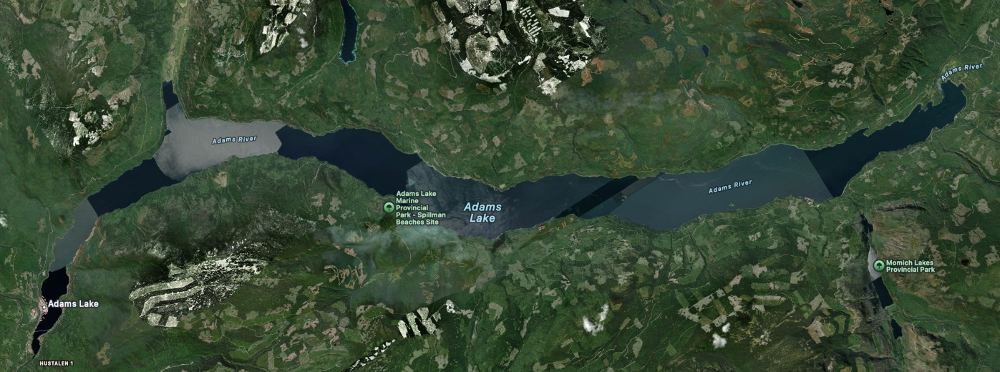
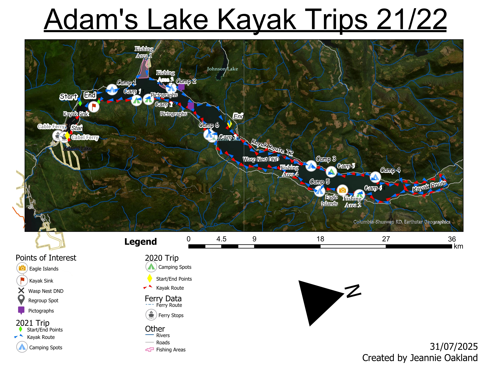

Adam's Lake, B.C
In 2020, right before the start of Covid 19, my husband and I bought ourselves each a fishing kayak. We spent many day trips fishing and exploring various lakes around the BC interior. Then, we wanted to go on a longer trip. The planning began. We decided on one of our favourite lakes, Adam’s Lake. We had camped on this lake countless times and fished it many times as well. So, it was the perfect choice for our first big lake trip. We planned the food, distance, camp spots, starting/end point and the start day. It came out to roughly 162km of shoreline, and we figured we could do the whole lake in one week. We even made sure everything we wanted to bring would fit in the kayaks before we left. The trip day came very quickly, and we were so excited.
Day 1; We got dropped off, organized all our packs and off we went. It was a cool morning and at 7:40am there was sunshine, a few clouds and the water was like glass. We did have to wear long pants and hoodies. Having got off to a good start earlier in the morning we were very confident that we would make our goal for the day. We had two quick pit stops; on the second stop we noticed it was a getting a tad bit windy. But, we kept going. Our biggest portion of no stoppable points was across a large length of tied up logs. We were nervous but made the decision to continue. Halfway across the waves got bigger and the wind pick up even more. Then, the panic set in. Do we continue? Do we go back? That’s when Dylan noticed the water in his kayak. We must go back but it was too late. His kayak filled very quickly, and we didn’t know what to do. We were terrified we’d lose the entire thing and all his gear. However, it did stay a couple inches beneath the water. My kayak was different luckily and had no problems. But, Dylan had to get out of his kayak and into the cold water fully dressed. His lifejacket was hardly keeping him above the waves. We quickly tied his kayak to mine and he held onto the very back and I paddled everything to shore. My arms were ready to give out. It must’ve been at least half an hour of paddling to safety, but we made it. Just as we got to shore, we burst out in laughter at the situation. We dried everything out and had a talk about safety. Then we waited until the wind died down continue.
Day two was also windy. To be safe we decided walking the kayaks was the only reasonable way to make progress for the day and we did not make it very far.
Day three was an excellent day. We made it past our goal. Dylan caught the first fish, we seen an old cabin and we had the amazing experience of seeing First Nations Petroglyphs on a prominent rock face.
Day four was a long haul and a lot of progress was made. Sadly, we had to pass up our common camping spot because how much garbage was left littering the site. But, we still got to watch another gorgeous sunset while having dinner on the beach.
Day five was another long day. This is the day we made it around the end of the lake and down past where we had camped the previous night. We were so proud. Some days we were spending 10-13 hours on the water. Exhausted but so very happy to be having such a wild adventure.
Day six was another windy day. So, we relaxed on the nice sandy beach we were camped at and did a little exploring. We even found a perfectly kept eagle feather. When the wind died down, we were able to continue; it was a warm sunny day. Then, I happened to be incredibly unlucky. On a pit stop, I stepped in an underground wasp nest, and I panicked. Dylan basically ended up tossing me into the lake. He was left untouched by the wasps. I on the other hand must have had at the least 10 stings on my shoulder and back. I had to swim down the beach aways because they continued to chase. I was sore, cold and wet. I changed clothes and took a quick break but decided to continue. After a few more hours of paddling, I could hardly continue. We were almost there. Perhaps a day away from the end. We stopped at a campground and luckily some very nice strangers drove us back to the start of the lake.
I was disappointed but not defeated. We had finished such an amazing stretch of paddling for 6 days. It was our greatest adventure at the time. We ended up doing it again the following year with much more success with zero incidents. We learned so much about ourselves in those two kayak trips. What we can endure. What we can accomplish. It was simply, amazing.
